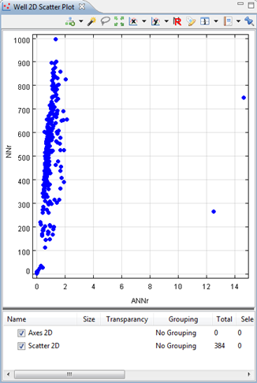
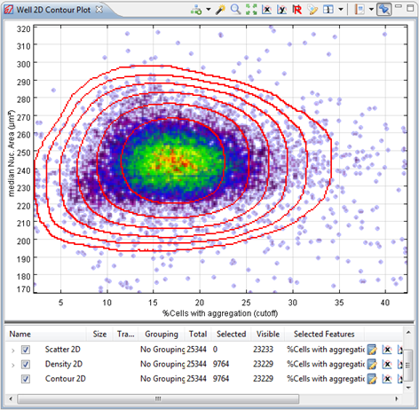

The Well 2D Scatter Plot uses coordinates to display the values of all the wells as a collection of points on a plate on a 2D chart.
The Well 2D Scatter Plot is used to view the spread of the points according to 2 features, chosen on the x and y axis.

| Scatter 2D Layer | This will add another layer of the default scatter plot. More scattered layers could be useful if, for example, aggregation is used on some of them. |
| Density 2D Layer | This will show a density layer where the color changes according to the density of that area with the selected feature. |
| Contour 2D Layer | This will show gravity lines around areas according to the density. We recommend that you smoothen the lines with the layer settings for a better result. |
| Well Image Layer | This shows the well image (if available) of the selected points |
| Compound Layer | This shows an graphical representation (if available) of the compounds of the selected points. |
For example, if you would have a Well 2D Scatter Plot with a density layer and a contour layer, you could get something like this:
